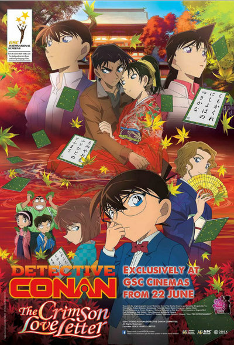
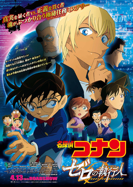
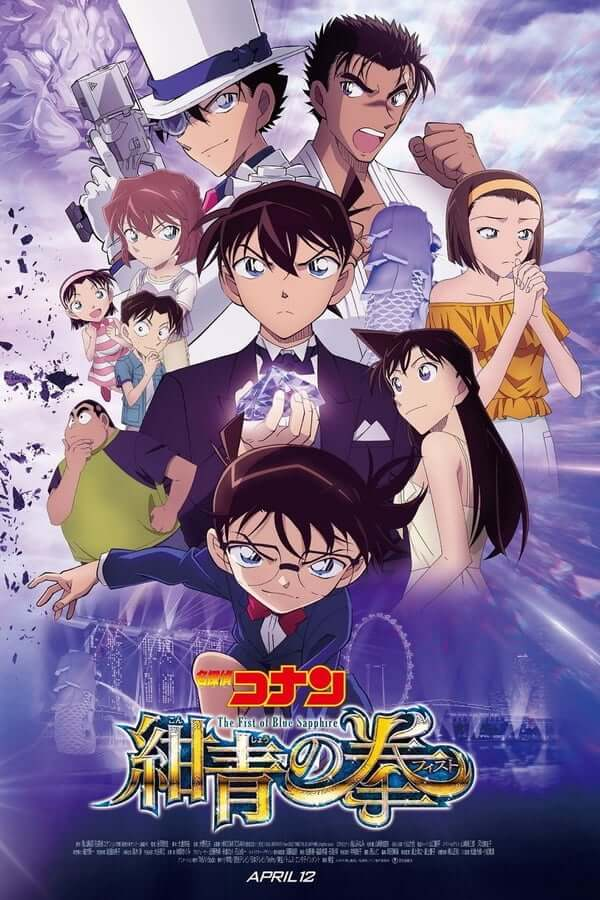
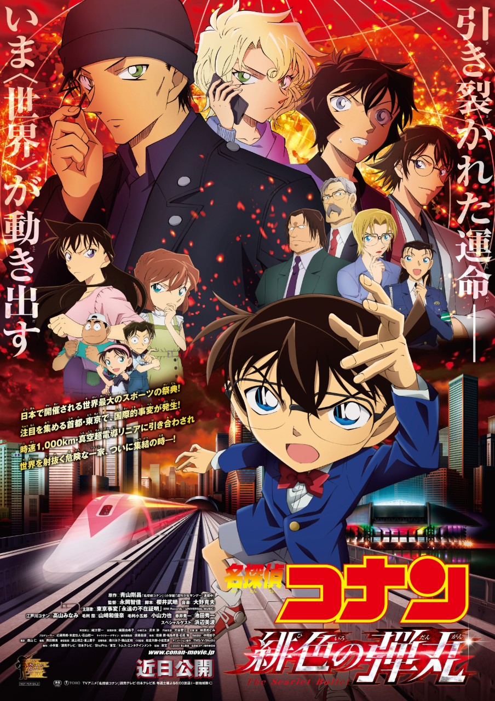

Welcome to the Detective Conan's World
Welcome to the Detective Conan's World
Welcome to the Detective Conan's World
Welcome to the Detective Conan's World| 最近年的四套電影劇場版 >>>更多的電影劇場版 | |
|---|---|
|  |  |
| 2017年 名偵探柯南：唐紅的戀歌(預告片) 劇情簡介：大阪的地標・日賣電視台正在錄製著主導百人一首的「皋月會」所舉辦的「皋月杯」的記者會，突然發生爆炸。 在響起轟隆聲，正在倒塌的建築物之中，西部名偵探・服部平次和其青梅竹馬・遠山和葉，只有那兩人困在裡頭。多虧了趕來的柯南，兩人沒事被救出來了。 在同一時間，京都嵐山的日本傳統房屋裡，發生了皋月杯的優勝者被殺害的案件。在那個時候，殺害現場的監控螢幕映出了紅葉的蹤影。 大岡紅葉聲稱自己是平次的婚約者，是百人一首的高中生冠軍，同時也被稱為未來的女王。 |
2018年 名偵探柯南：零的執行人(預告片) 劇情簡介：在東京灣建立了一座巨大設施「海之邊緣（Edge of Ocean）」， 並於5月1日展開東京高峰會，但在前一周突然發生了一場爆炸事故。 而在事件現場，有著神祕人物—安室透的身影。事件發生後，公安警察開始著手調查， 但居然在現場遺留的證物上發現了毛利小五郎的指紋?! 隨後毛利以犯罪嫌疑人被逮捕， 覺得不對勁的柯南決定找尋真相...... 具有三重身分的謎之人物安室透，他究竟是敵是友? |
|  |  |
| 2019年 名偵探柯南：紺青之拳(預告片) 劇情簡介：據說在19世紀末，世間最大的藍寶石「紺青之拳」與海盜船一同沉入新加坡水域。 正當新加坡富豪計劃將其回收，並在公開場合現身時，濱海灣金沙酒店發生了謀殺案，現場還遺留著怪盜基德的染血預告書。 原以為獲得藍寶石輕而易舉，沒想到基德在潛入地下金庫時，卻遭到最強空手道家「京極真」的阻撓。 而另一方面，沒有護照的柯南也藉由基德的魔術變身為「亞瑟·平井」，在眼鏡、手錶、衣服全被奪走的情況下，被迫服從於基德……究竟這場計畫是否能成功？三人的命運又將會如何？ |
2021年(未上映) 名偵探柯南：緋色的彈丸(預告片) 劇情簡介：世界最大的體育盛會「WSG -World Sports Games-」將在東京舉辦。 日本為配合開幕式慶祝，結合日本所有先進技術丶最高時速達1000km的「真空超電導新幹線」將在新名古屋站和東京新建成的芝濱站之間開通。 在世人目光的注視下，知名大會贊助商彙集的會場遇到突發事件，企業老闆相繼被綁架。在背後監視這起事件的赤井秀一，以及等待赤井指令的FBI成員們的身影。 根據柯南的推理，與15年前的在美國波士頓發生的禁忌的WSG連續綁架事件存在關聯，並確定當時的事件也是FBI負責的。 |